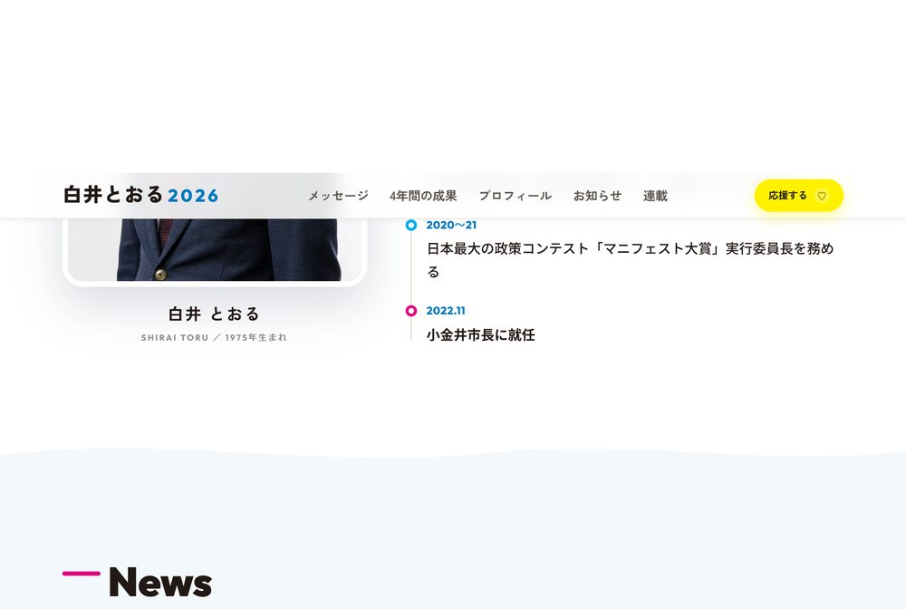
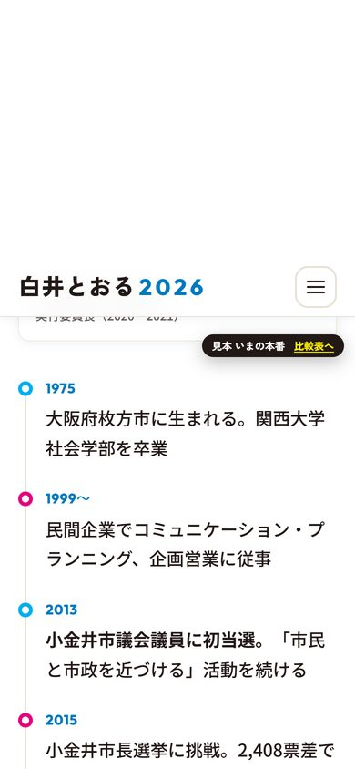
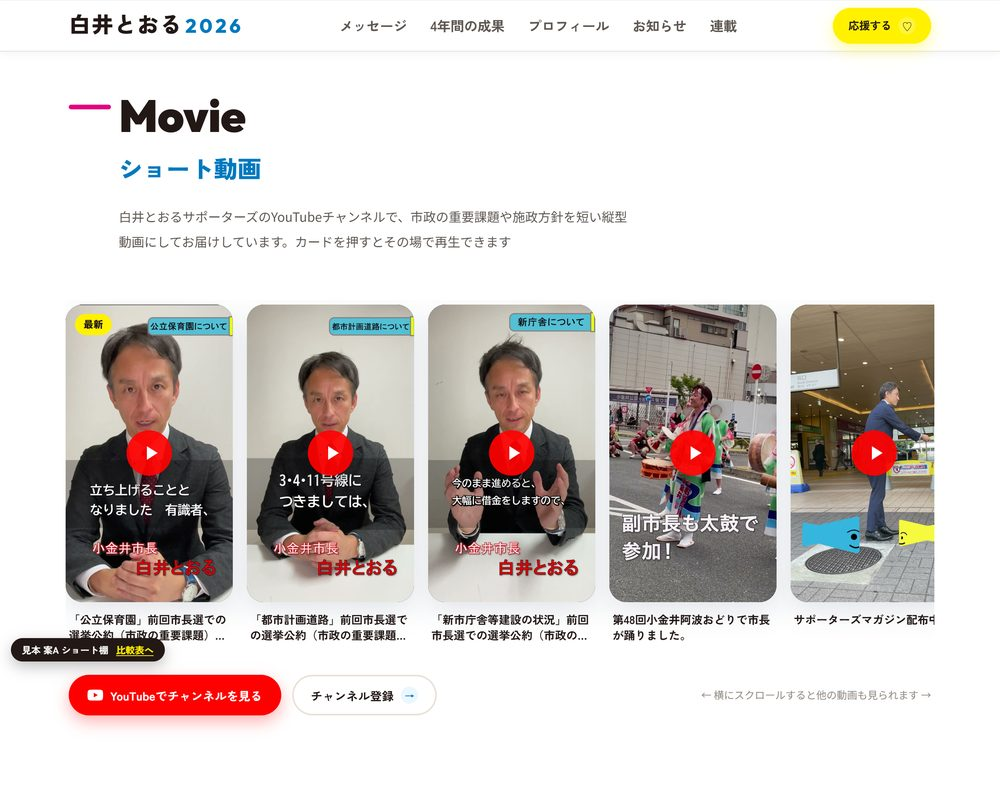
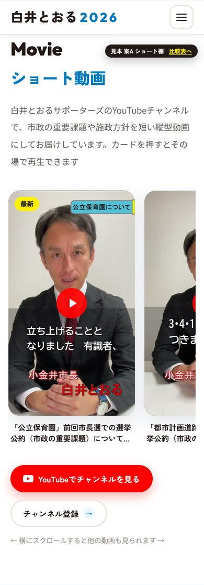
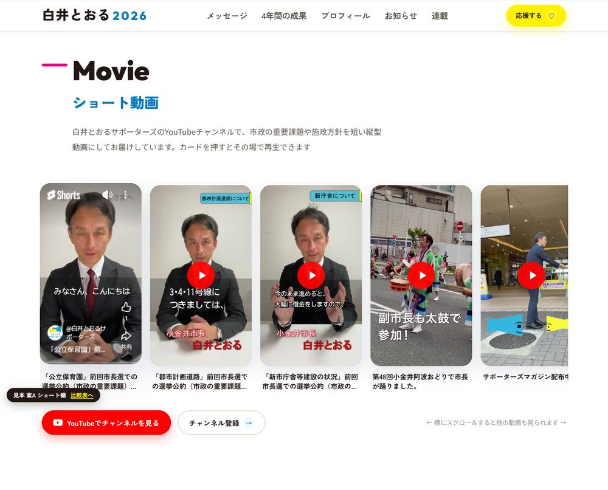
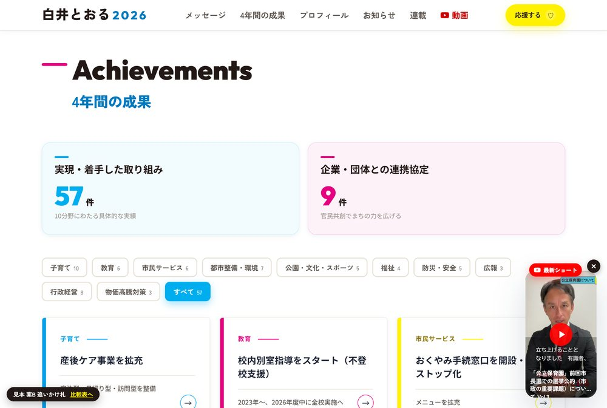
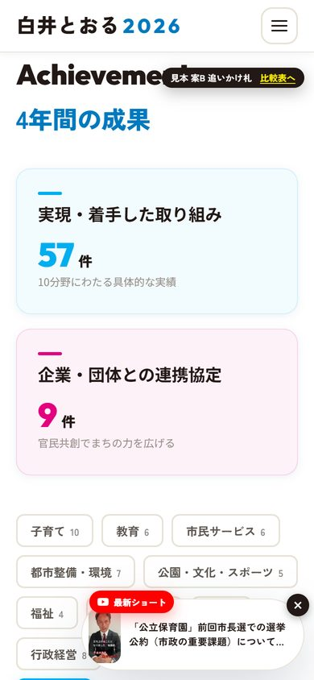
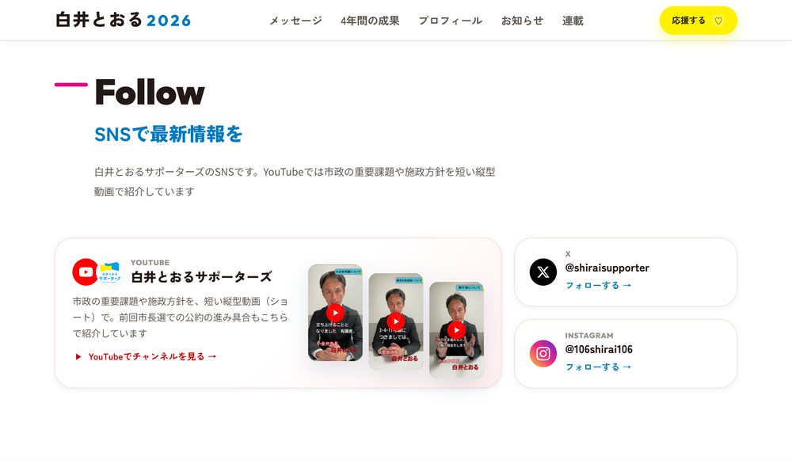
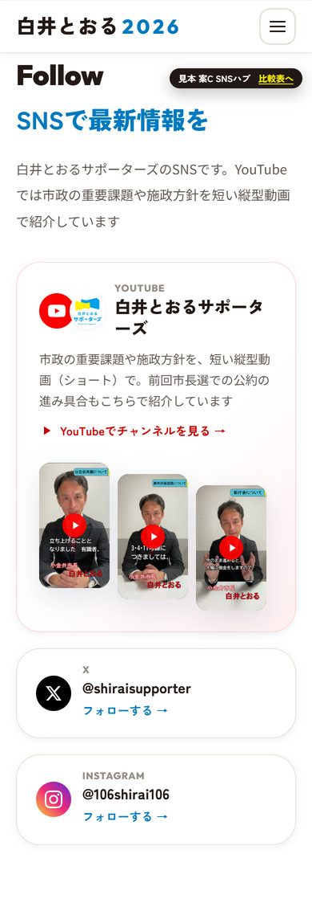

白井とおるサポーターズの YouTube を、トップページからどう見せるか。いまの本番（c12fe70）の上に、それぞれの案を足した見本です。
YouTubeへのリンクはどこにもない（フッターのSNSアイコンは X・Facebook・Instagram・note の4つ）


お知らせの下に「Movie／ショート動画」の欄を新設。縦型カードを横に並べ、押すとその場で再生（Cookieを使わない埋め込み）。赤い「YouTubeでチャンネルを見る」と「チャンネル登録」のボタン



ナビに「▶ 動画」を足し、スクロールすると画面右下に最新ショートの小さな札が出る（×で閉じられる・最下部では引っ込む）。スマホでは細い帯になる


お知らせの下に「Follow／SNSで最新情報を」の欄。YouTubeを主役にした大きなカード（チャンネル名・説明・最新3本の縦型サムネイル）＋ X・Instagram のカード


各ページの左下（スマホは右上）に「見本 案○」の札を出しています。本番には入りません。CSS・画像・PDFは本番サイトのものを読んでいるので、見た目は本番と同じです。